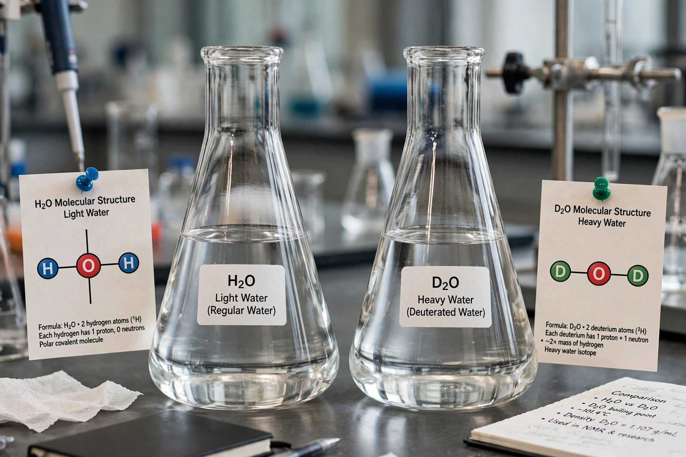

Heavy water
Heavy water (deuterium oxide, 2H2O or D2O) is a form of water whose hydrogen atoms are the hydrogen isotope deuterium rather than the common protium isotope. It is denser than ordinary water — about 11% heavier per unit volume — and differs slightly in physical and chemical properties: it melts at 3.8 °C and boils at 101.4 °C.

| Heavy water | |
|---|---|
| Formula | D2O |
| Melting point | 3.82 °C |
| Boiling point | 101.4 °C |
| Density | 1.106 g/cm³ (liquid) |
History
Deuterium was discovered by Harold Urey in 1931, and heavy water was first isolated by Gilbert Lewis in 1933. During the Second World War, heavy water produced at the Vemork plant in German-occupied Norway became strategically important because it could serve as a neutron moderator in a nuclear reactor using natural uranium; Norwegian resistance operations, with Allied support, sabotaged the plant and sank the ferry carrying its stock in 1944.
Applications
Heavy water's main use is as a neutron moderator in CANDU and other pressurised heavy-water reactors, which can run on unenriched uranium. Because deuterium absorbs far fewer neutrons than ordinary hydrogen, such reactors also accumulate tritium in their moderator as a by-product. Heavy water is also used in nuclear magnetic resonance spectroscopy, in metabolic labelling studies, and as a neutron source material in physics research.
Biological effects
Heavy water is not radioactive, but high concentrations are toxic to most organisms because the heavier isotope slows the chemical reactions of mitosis and metabolism. Small proportions occur naturally in all water — roughly one molecule in 6,400 — and are harmless.